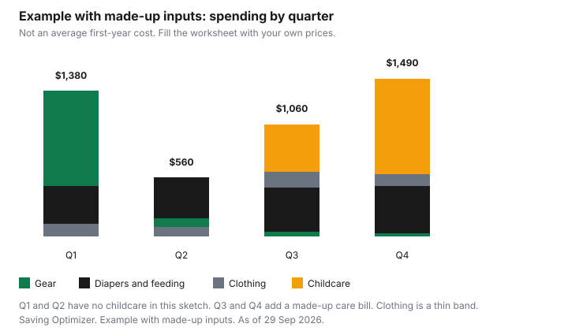

Kids · Canada
The First-Year Cost of a Baby in Canada: What You Actually Need and What Can Wait

Lists for a new baby are long because they are written by people who sell the list. The Canadian question is smaller. What has a safety rule, what is a benefit you apply for, and what is a price you write down yourself. This page does not invent an average first-year cost. The chart is an example with made-up inputs so the quarters are not identical. Your receipts replace it.
Key takeaways
- A car seat needs a National Safety Mark, a known history, and no collision. A crib made before September 1986 should not be used. Drop-side cribs cannot be sold.
- For July 2026 to June 2027 the Canada Child Benefit maximum for a child under 6 is $8,157 a year ($679.75 a month) when adjusted family net income is under $38,237. Apply. The reduction above that income is on the AFNI guide.
- Leave pay outside Quebec is EI maternity and parental. The rates are on the EI guide. Quebec uses QPIP.
- Feeding is a health decision. This page does not price formula against breastfeeding.
- Example with made-up inputs: four quarters total $4,490. That figure is not a Canadian average.
One-time gear: must-have, nice-to-have, borrow
Buy the thing that has to be safe on day one. Borrow the thing you might use for six weeks.
Skip the thing a registry added because the slot was empty. A second car seat for a second car is a must-have only if the baby will ride in that car, and only if it passes the used-seat tests below. A swing is a borrow. Clothing in newborn sizes is often a borrow too. The kids' clothing guide is the tax and replacement math. This page does not repeat it.
| Item | Role | Safety note |
|---|---|---|
| Car seat | Must-have for any car trip | National Safety Mark. Not recalled. Not in a collision. Do not use it if the seller does not know the history. Expiry is the manufacturer's date. See the used-gear section. |
| Crib, cradle, or bassinet | Must-have as the sleep place. Health Canada says if you buy only one, choose a crib. | Do not use a crib made before September 1986. Do not buy a drop-side crib. Check a used crib, including one more than 10 years old, for damaged parts. |
| Feeding supplies your care provider recommends | Must-have for the way you will feed | Health Canada's formula page is regulation and labelling, not a shopping list. Follow your health provider. |
| Monitor, swing, extra containers | Nice-to-have | None of these replace a safe sleep surface. Health Canada says bare is best in the crib: no pillows, blankets, or bumper pads. |
| Stroller, newborn clothes, a second seat you will not use yet | Borrow, or wait | A borrowed car seat still needs the used-seat checks. Clothes are on the clothing guide. |
Ongoing costs: diapers, feeding, clothing
Diapers change size. A case of a size the baby has left is not a saving.
Compare the package in front of you by the price per diaper, and stop when you cannot store the next size. There is no national diaper price here. A subscribe-and-save offer is a schedule. The subscribe-and-save guide is how to read that schedule. The checkout total is the price.
Feeding is not a contest this page will score. Health Canada's page on infant formula and human milk fortifiers describes how those products are regulated, labelled, and, in shortage notices, imported. It does not say which way of feeding costs less. Ask your health provider. If you buy formula, the worksheet line is the price on the tin times the tins you use. If you do not, the line is zero. Do not borrow someone else's average.
Clothing in the first year is growth, not a layette brand. Use the kids' clothing guide for Ontario's point-of-sale rebate and for what to pass down. Put a monthly clothing number on the worksheet only after you have looked at what was given to you. A full-price newborn wardrobe on top of a box from a friend is the expensive version of the same shirts.
Parental leave income and the benefits timeline
The income side starts before the gear does. Outside Quebec, maternity and parental benefits are Employment Insurance.
The weekly rates, the 15 maternity weeks, and the standard versus extended choice are on the EI guide, from Service Canada's page. Do the month math there before you set a return-to-work date. In Quebec, the Quebec Parental Insurance Plan replaces those EI benefits. Open rqap.gouv.qc.ca for the amount. This page does not copy QPIP rates.
A workplace top-up is the employer's plan. Whether it changes the EI payment is a Service Canada question. The EI guide says how to treat that uncertainty: read the plan, then check. Do not add a hoped-for top-up into the month until both answers exist.
CCB and provincial benefits to apply for right away
For July 2026 to June 2027, the CRA's maximum Canada Child Benefit is $8,157 a year, $679.75 a month, for each child under 6, and $6,883 a year, $573.58 a month, for each child aged 6 to 17, when adjusted family net income is under $38,237. Above that income the benefit is reduced.
The rates are on the AFNI guide. Apply even if you think your income will reduce it to a small payment. The CRA also administers provincial and territorial child benefits for some provinces, paid with the CCB or separately. The how-much page lists them. Open your province. This guide does not quote those provincial amounts.
T4114's examples of applying use Form RC66, the Canada child benefits application. Use the CRA's current apply page for the form in front of you. You and your spouse or common-law partner each file a tax return, including a year with little income, or the benefit cannot be calculated. A child eligible for the disability tax credit may also get the child disability benefit, up to $3,480 a year ($290 a month) for that same July 2026 to June 2027 period, reduced when family income is over $82,847. The CRA adds it. You do not file a second benefit form if the credit is already approved.
| Task | Where | What this guide will say |
|---|---|---|
| Birth registration | Your province or territory | The province sets the form and the fee. Check that site. No fee is quoted here. |
| Social insurance number | Service Canada | Apply for the child. Check Service Canada for what to bring. |
| Canada Child Benefit | CRA how-much page | Under 6: up to $8,157 a year for July 2026 to June 2027 if AFNI is under $38,237. Apply. |
| Provincial child benefit | The province, often via the CRA | Check your province. Do not copy another province's amount. |
| EI or QPIP | The EI guide, or QPIP in Quebec | Standard 55 percent up to $729 a week. Extended parental 33 percent up to $437. Quebec: check QPIP. |
| RESP and Canada Learning Bond | RESP and bond guide and the grant guide | The grant and the bond have rules and amounts on those guides. Confirm before you contribute. |
Safety rules for used gear
Health Canada's second-hand car seat page says every new and used seat sold in Canada has to meet Transport Canada requirements, including seats from a garage sale, a second-hand store, a person, or a giveaway. Do not use a seat if the seller or lender does not know its history.
The seat needs a National Safety Mark, which the page calls proof it meets Canadian safety standards. It needs a manual, and every part the manual lists, in working order. It must not have been in a vehicle during a collision. Check for a recall with Transport Canada and with the Health Canada recalls database at recalls-rappels.canada.ca. This guide does not name a current recall. Search the seat you are holding.
Expiry dates are on most seats even though the law does not require them. Health Canada says to contact the manufacturer for that seat's date. Transport Canada's expiry page, date modified 3 October 2019, says most seats have an expiry or useful-life date, and it tells caregivers to follow the manufacturer's instructions and warnings. A seat made before 1 January 2012 may be illegal to advertise, sell, or give away. The household used-goods guide is the general habit. The car seat is stricter than a side table.
For sleep, Health Canada says cribs made before September 1986 should not be used. As of 29 December 2016 it is illegal to sell, import, manufacture, or advertise traditional drop-side cribs. If you buy a used crib, or the crib is more than 10 years old, check for missing, loose, worn, broken, or damaged parts. The page does not say "throw out every crib over 10 years." It says to inspect. Do not repair one with hardware-store bolts. If the manufacturer cannot supply the part, dispose of it so it is not used again. The same page says the safest sleep is on the back, in a crib, cradle, or bassinet free of soft items, and that bare is best. That is the federal guidance. Your clinician is the person for your baby. This page is not medical advice.
A month-by-month first-year worksheet
Example with made-up inputs. The twelve months below are a fiction so the quarters in the chart have different shapes.
Gear is heavy in month one. Childcare is zero until month eight, then a made-up part-time bill. Nothing here is a store price, a survey, or a city average. Replace every cell.
| Month | Gear | Diapers and feeding | Clothing | Childcare |
|---|---|---|---|---|
| 1 | $700 | $110 | $40 | $0 |
| 2 | $120 | $120 | $40 | $0 |
| 3 | $80 | $130 | $40 | $0 |
| 4 | $40 | $130 | $30 | $0 |
| 5 | $20 | $130 | $30 | $0 |
| 6 | $20 | $130 | $30 | $0 |
| 7 | $20 | $140 | $50 | $0 |
| 8 | $10 | $140 | $50 | $150 |
| 9 | $10 | $140 | $50 | $300 |
| 10 | $10 | $150 | $40 | $300 |
| 11 | $10 | $150 | $35 | $300 |
| 12 | $10 | $150 | $35 | $300 |

Blank version, which is the one you keep. One row per month. Gear, diapers and feeding, clothing, childcare, and the benefit or leave deposit on a separate income line so you do not subtract the CCB from the crib and call the crib free. The CCB is income. The crib is a purchase. They meet in the household budget, not in the store.
Sources
- CRA, Canada Child Benefit how-much page, page details 23 June 2026, as of 29 Sep 2026. Under 6: $8,157 a year ($679.75 a month). Ages 6 to 17: $6,883 ($573.58). Full amount when AFNI is under $38,237, for July 2026 to June 2027.
- CRA guide T4114, as of 29 Sep 2026. Form RC66 in the application examples. Child disability benefit up to $3,480 ($290 a month) for the same period, reduced above $82,847. Both spouses file.
- Service Canada, EI maternity and parental benefits, page details 2 June 2026, as of 29 Sep 2026. Rates are quoted on the EI guide. Quebec uses QPIP.
- Health Canada, second-hand car seats, page details 10 December 2024, as of 29 Sep 2026. National Safety Mark, no collision, known history, manual and parts, recall check. Expiry: contact the manufacturer.
- Transport Canada, expiry dates on child car seats, date modified 3 October 2019, as of 29 Sep 2026. Follow the manufacturer's instructions. Seats made before 1 January 2012 may be illegal to sell or give away.
- Health Canada, cribs, cradles and bassinets, as of 29 Sep 2026. Do not use cribs made before September 1986. Drop-side cribs illegal to sell, import, manufacture, or advertise as of 29 December 2016. Inspect a used crib and one more than 10 years old. Bare is best.
- Health Canada, infant formula and human milk fortifiers, as of 29 Sep 2026. Regulation and labelling. No household price comparison.
- The $4,490 year and every monthly cell are an example with made-up inputs.
Frequently asked questions
How much does a baby cost in the first year in Canada?
This guide does not state an average. The chart is an example with made-up inputs that totals $4,490 over four quarters, and your prices will not match it. Put your own gear, diapers, feeding, clothing, and childcare on the worksheet. Benefits such as the Canada Child Benefit and parental leave change the income side, and they are not a price for a crib.
What baby gear should I buy new?
A car seat whose history you cannot prove should not be used: Health Canada says not to use a seat if the seller does not know its history, and the seat needs a National Safety Mark, a manual, and no collision. A crib made before September 1986 should not be used, and a drop-side crib cannot be sold. Everything else can wait until you know you will use it. This is not a product ranking.
What benefits should I apply for after my baby is born?
Register the birth with your province, apply for a social insurance number, and apply for the Canada Child Benefit. Outside Quebec, look at EI maternity and parental benefits, and in Quebec use the Quebec Parental Insurance Plan. An RESP, including the Canada Learning Bond if you qualify, is a separate application, and provincial add-ons often ride with the CCB, so check your province. This is not tax advice.
Is formula or breastfeeding cheaper?
This page does not compare the cost, and it does not give feeding advice. Health Canada's infant formula page is about regulation, labelling, and supply notices, not a household price. The decision belongs with you and your health provider. If you use formula, put the price from the shelf on the worksheet, and if you do not, leave that line at zero.
How can I save on diapers?
There is no national diaper price on this page. Buy the count you will use before the size changes, and compare the package price per diaper on the shelf in front of you. A subscribe-and-save offer is a delivery schedule, not a lower price until the checkout says so. The subscribe-and-save guide is the method, and a size you have outgrown is not a bargain.
Researched and drafted with AI assistance and fact-checked against official Canadian sources. How we create content.
Disclosure: Baby retailer and registry offers, including an Amazon.ca baby registry offer type, are offer types. Saving Optimizer may earn a commission if a partner link is added later. No partnership is claimed. A registry does not change a safety rule or a benefit. Education only. This is not medical, tax, or parenting advice.